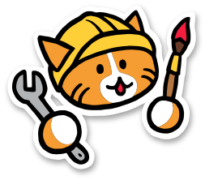

Quarto
about
boxes
can
be
nested
cat pics
octocats
penelope
docs
page options
quire class
relative paths
examples
adrift
burning
celestial
doctoral
faq
Octocats
example image gallery
Images are shown at reduced size. Click an image to see the full-size image.
Images taken from the
Octodex
. See the
Octodex FAQ
for licensing.

◄◄
⇪
►►
© Sam Kennerly 2019.
Licensed under a CC BY 4.0 license.
Built by a Quarto.
Hosted by Neocities
.
quarto.sites@gmail.com